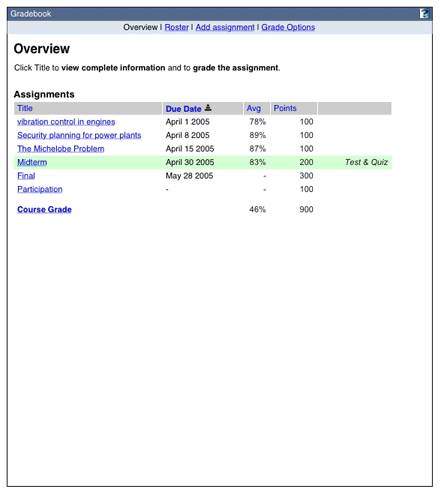
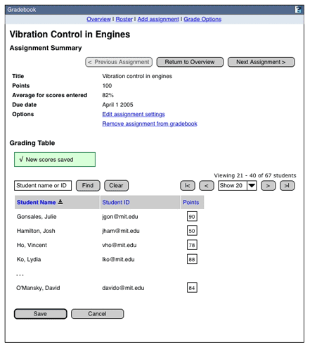
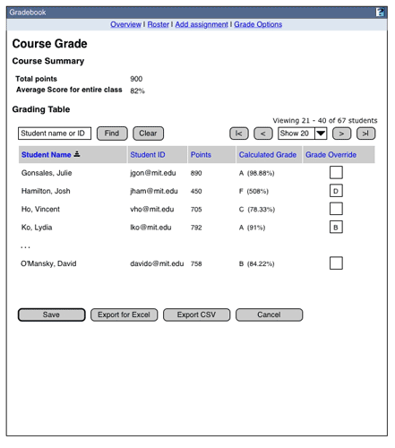
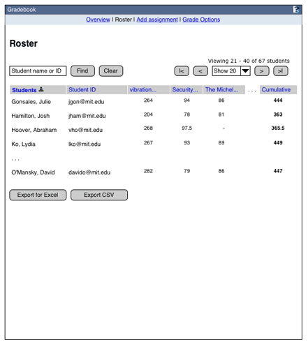
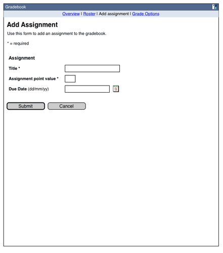
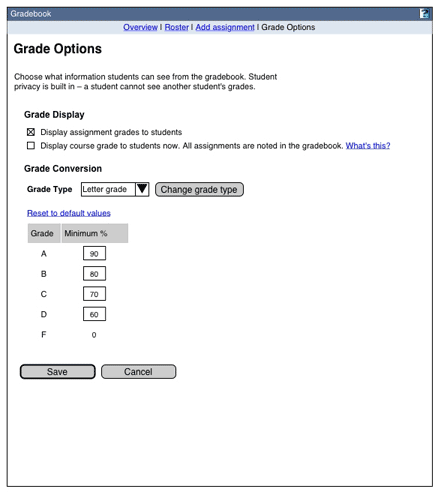
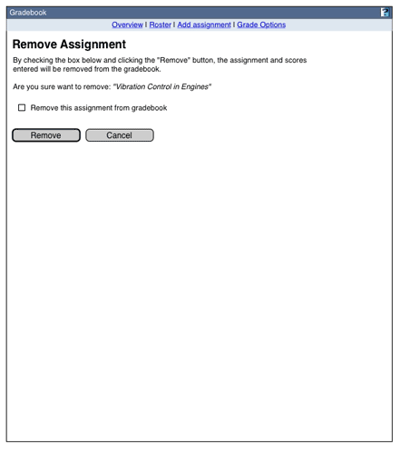
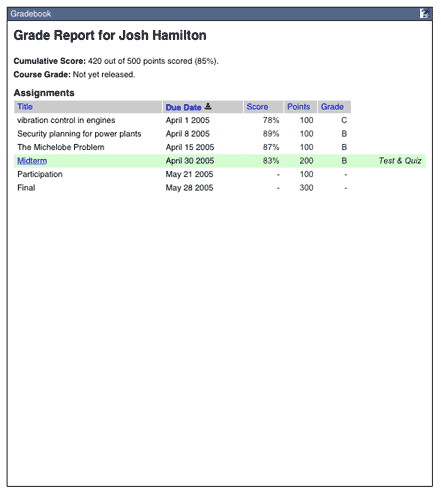

Wireframes and Functional Specification
A. Overview -- View 1

Wireframe of View 1
1. Table Sorting Rules
- Initial sort is by due date.
- If there is no due date, sort to the bottom of the list.
- The course grade always appears at the bottom of the list, regardless of the active sort.
- Subsorting for non-default sorts is by student name.
- The sort order is preserved for the duration of the session.
2. Assignment Title Link
- If the assignment was created in the gradebook, the title links to the Assignment Detail, View 2.
- If the assignment was created in Quiz and Test, the title links to the corresponding scoring view in that tool.
- The assignment name has a maximum character length of 255 and it is displayed in its entirety. Text will wrap according to the display needs of the table. There are currently no limitations on character types in the name. Internationalization requirements TBD.
- If no assignments have been entered in the gradebook, the message "The gradebook currently has no assignments. The Add Assignments [link to Add Assignments view] link is always available in the gradebook navigation" appears beneath the Assignments table headers.
3. Point Display Values
- Values chop at 2 decimal points and are not rounded up.
- The Average points is the mean of all values >= 0 that have been entered for the assignment. Blanks are not treated as zeros for purposes of the calculation.
B. Assignment Detail -- View 2

Wireframe of View 2
1. Assignment Summary
- The assignment title has a maximum character length of 255 and it is displayed in its entirety. Text will wrap according to the display needs of the table. There are currently no limitations on character types in the name. Internationalization requirements TBD.
- The average score is the mean of all values >= 0 that have been entered for the assignment. Blanks are not treated as zeros for purposes of the calculation.
- Options links: 'Edit assignment settings' links to View 4.
- Options links'Remove assignment from gradebook' links to View 6.
2. New scores saved message
- Example confirmation message.
3. Table Sorting Rules
- Initial sort is by student name.
- Blanks or no scores sort to the top of the list
- Subsorting for non-default sorts is by student name.
- The sort order is preserved for the duration of the session.
- When sorting is changed, paging resets to the first page.
4. Find Rules
- Initial value: as in wireframe. When the focus comes to this field, the initial value disappears.
- If there is no match, the page reloads, there is a note where the listing table would be saying no results found for "[the search term]" The "Find" and "Assignment" values return to the initial values.
- The last established students per page value is retained and displayed. (Use the style specified for alert messages in the style guide.)
- For search values, only the last space-or-comma-separated value is treated as a substring:
Copp
Francis Ford Copp
Coppola, Francis F
All return Coppola, Francis Ford
Francis F. Coppola
Returns an error
- Truncation or wild card symbols are not supported
5. Save
- The Save button saves newly entered data and refreshes the view (average score is updated and 'changes saved' message added to top of page). The last executed search and students per page values are retained and displayed upon refresh.
- The save button is the only mechanism for saving score data. If newly entered data is not saved, it will be discarded upon using any of the gradebook's internal (as opposed to the browser's or Sakai framework's) navigation or find/show functionality.
- If two or more users are simultaneously attempting to edit the same student's score, the second of the scores to be submitted will overwrite the first. [Ideally, an optimistic lock would be placed on all of the scoring objects. In that case, user two's attempt to submit changes would generate a message indicating that the same record had been accessed and modified by someone else. This is functionality that will be be added if time permits.]
6. Cancel button
- Any new form data is discarded and the user returns to the Overview page.
7. Point Entry
- Values must be >= 0. Decimal values are accepted. Commas and other non-numerical characters are not accepted. Thier inclusion will throw an error message: "Please enter numbers only into the points field."
- After values are saved, the maximum number of visible characters in text box = 3; these are right aligned. Values > 3 characters are scrollable.
- Scores submitted via Samigo cannot be edited in the gradebook.
8. Export
- Files are exported in .xls and .csv format
- The file name format is "assignment_name_[courseID]_date.*". If the class number is not available use 'assignment_name_050611.Date format should follow the style guide.
- Exported fields and the names of the Excel column headers are Student Name, Student ID, [assignment name]. The full student display names and complete assignment names are exported. Point values are chopped at 2 decimal places.
- Scores are listed in the assignment name column
- Point values are chopped at 2 decimal places.
- Exported data is for the currently displayed assignment only
- All available roster data is exported. Filtering the view by student does not affect the output.
- There is no navigation state change after clicking these buttons
C. Final Grade detail -- View 2a
This view is similar to view 2. UI components not in View 2 are noted.

Wireframe of View 2a
1. Course Summary
- Points: Total possible points of all assignments currently entered into the gradebook directly and/or via SAMigo.
- Average Score: The mean of all possible score values for all assignments. Blank scores are treated as zeros for calculation purposes.
2. Calculated Grade
- The calculated grade field is by default filled with the grade calculated by the gradebook (A, B . . .or A-, B+ . . . or P/NP) and the percentage the grade is based on.
- The grade is always calculated as the current percentage of points scored out of the total possible points of all assignments entered in the gradebook. Consequently, the grades that the instructors see are unlikely to reflect students' current performance in the class, unless or until all of the assignments have been scored.
- For purposes of calculating the course grade, a student's cumulative average percentage is never rounded up. For example, a student who achieves an overall pecentage of 79.99 would receive a course grade of C+, if the lower threshold for a B- is 80%.
3. Grade Override
- Override values must be of the appropriate grade type (A, B . . . or A-, B+ . . .or P/NP) or an error is generated: "The gradebook uses the grade type [pass/not pass|simple letter grade|letter grade +/-]. Please enter only values that correspond to the grade type X."
- Error messages are also generated next to each of the fields with bad values: "Please enter valid grade."
- If a bad value is entered for an autocalculated grade, upon save the Use Calculated button is not rendered with the error messages; if a saved overridden value is replaced with a bad value, upon save the Use Calculated button is rendered with the error messages.
- Saved overrides appear in the entry field as editable values.
- Values identical to the calculated course grade are treated as legitimate entries and do not generate an error.
- Deleting a saved overridden value, leaving the entry field blank and executing a save returns the course grade to the calculated value.
4. 'Use Calculated' button
- The 'Use Calculated' button appears next to any grade that has been overridden
- Activating the 'Use Calculated' button refreshes the page, leaves the grade entry field blank and returns the current grade to the calculated value.
5. Export
- Files are exported in .xls and .csv format
- The file name format is "course_grade_[courseID]__date.*". If the class number is not available use 'course_grade_050611. Date format should follow the style guide.
- Exported fields and the names of the Excel column headers are Student Name, Student ID, Course Grade. The full student display names and complete assignment names are exported. Point values are chopped at 2 decimal places.
- Scores are listed in the assignment name column
- Point values are chopped at 2 decimal places.
- Exported data is for the course grade only
- All available roster data is exported. Filtering the view by student does not affect the output.
- There is no navigation state change after clicking these buttons
D. Student Roster -- View 3

Wireframe of View 3
1. Export buttons
- Files are exported in .xls and .csv format
- The file name format is "gradebook_[courseID]_assignment_name_date.*". If the class number is not available use 'gradebook-050611.Date format should follow the style guide.
- Exported fields and the names of the Excel column headers are Student Name, Student ID, [assignment name].
- The full student display names and complete assignment names are exported.
- Point values are chopped at 2 decimal places.
- Scores are listed in the assignment name column
- All available class data is exported. Filtering the view by student does not affect the output.
- There is no navigation state change after clicking these buttons
2. Point Display Values
- Values chop at 2 decimal points; they are not rounded up.
3. Student Display
- Limit display of the student name to the first 50 characters (use ellipses to indicate truncated name)
- If there is no roster data, the message "No students have been added to this course" appears beneath the Student and Student ID Roster table headers.
E. Add/Edit Assignment -- View 4

Wireframe of View 4
1. Title field
- This is a required field.
- The assignment title has a maximum character length of 255 and it is displayed in its entirety. There are currently no limitations on character types in the name. Internationalization requirements TBD.
2. Assignment point value field
- This is a required field.
- Value must be > 0.
- Decimals are permitted. Values beyond 2 decimal places are chopped for all other point displays in the gradebook.
- If the entry is invalid, any values entered or selected in title or date are retained with the error message: "Please only enter numbers in the Assignment Point Value. The point value must be >0."
3. Due date date-picker
- This field is optional.
- If any one date value is added (month, day or year), all must be present for a valid submission.
[Note: The date picker is highly specified in the style guide. We need to watch consistency with Sakai here. A request to change the SG to make it possible to clear the date using the date picker has been submitted.]
4. Submit button
- If the submit validates, the user is returned to the add/edit page with a success message
- For new assignments, a message is generated: "You have successfuly added assignment X"
- For edited assignments, a message is generated "You have successfuly updated assignment Y"
5. Cancel button
- The form is not submited, the user is returned to the Assignment Overview page.
F. Student Feedback Options -- View 5

Wireframe of View 5
1. Grade Display
- The Display Assignment Grades checkbox is checked by default
- The Display Course Grade checkbox is unchecked by default
- Display final grade 'what's this' link Opens the help window with information explaining why you shouldn't display the final grade until all of the assignments have been added or unless assignments are added to the gradebook incrementally as they are scored.
2. Grade Conversion
Grade Type dropdownChoices: Letters grade +/- (default choice), Simple letter grade, Pass/Fail
Change grade type button: Refreshes the page with the percent table matching the scheme chosen in the dropdown. Other changes to the page are retained.
Validation: If course grades have been manually entered and the instructor attempts to change the grade type, the application will throw an error message: "You have manually entered course grades of the grade type X. To change the course grade type, you must first undo all manually overwritten course grades."
Reset to default values linkRefreshes the page. The minimum % values are returned to the institution default. Grade type remains the same.
3. Grade/percent table
If the values are changed, then the instructor changes to a different scheme, then switches back, the GB remembers the instructors previously entered scheme.
Manually overwriiten course grades are unaffected by changes to the Grade/percent table. If there are manually entered course grades, the application throws a warning message: "You have changed the grading scheme. All manually overwritten course grades remain unaffected."
Minimum Percent text boxValidation: Values must be >= 0. Decimal values are accepted. Commas and other non-numerical characters, including % are not accepted. Their inclusion will throw an error message: "Please only enter numbers in the Minimum Percent Value. The percent value must be greater than 0."
DisplayAfter values are saved, maximum number of visible characters in text box = 3; these are right aligned. Values > 3 characters are scrollable.
4. Save button
Returns the user to the page they came from, with a confirmation message saying "Student Feedback Options Saved"
5. Cancel button
Returns the user to the page they came from, with no confirmation message.
G. Remove assignment -- View 6

Wireframe of View 6
1. Remove this assignment checkbox
Default value: unchecked
Validation: The form can't submit unless this button is checked.
2. Remove button
Marks the assignment as 'removed' in the database. It no longer appears in the database, but in an emergency could be recovered by an administrator. The tool then returns view 1 (overview) with a confirmation message : "Assignment deleted"
If the checkbox above has not been selected when submit is pressed, a validation message should appear: "You must confirm this deletion by checking the box below before removing."
3. Cancel
H. Student View -- View 7

Wireframe of Student View
1. Cumulative Score
Visibility: This is visible if the instructor has checked the 'Display Assignment Grades' checkbox in view 5.
Calculation: The points taken equals the total of available points for assignments the instructional staff has scored for this assignment.
2. Course Grade
Visibility: This is visible if the instructor has checked the 'Display Final Grade' checkbox in view 5.
Calculation: The final grade display is always based on the percentage of points scored out of the total possible points of all assignments entered in the gradebook. If the instructor releases the course grade before all of the assignments have been scored, the grades that the students see at any one time are unlikely to reflect their current performance in the class.
3. Assignment Title link
Links are only for assignments created in Samigo.
If the assignment was created in Samigo, this links to the view in Samigo where students receive detailed feedback.